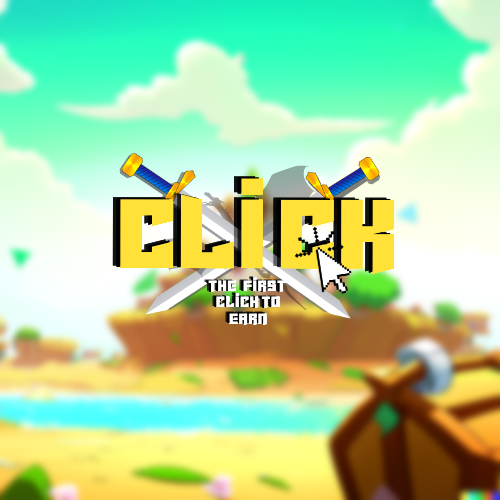

- CLICK -
CLICK is a blockchain-based Play-to-Earn game where players earn rewards in the form of CLICK
tokens by clicking on boxes on the screen, which can be used to buy, upgrade, and sell NFTs.
See Whitepaper

DISCLAIMER :
This site is operated by an anonymous entity and does not provide financial or investment advice.You
are solely responsible for any investment decision or transaction made based on the information
contained on this site. We are not responsible for any financial loss, damage or other result
arising from the use of this site.
Please note that cryptocurrencies are highly volatile and carry significant risks. You should
carefully consider your investment objectives, level of experience, and risk appetite before making
any investment decisions.
Introduction:
The video game market has experienced exponential growth in recent years, and the trend continues to
rise. Play-to-Earn blockchain-based games have taken the industry by storm, offering a new way for
players to earn money while having fun.
CLICK is a Play-to-Earn game based on the Polygon blockchain
technology that allows players to earn rewards in CLICK tokens by playing the game.
Objective:
The objective of CLICK is to create an accessible Play-to-Earn gaming platform for all players,
using blockchain technology to ensure platform security and transparency.
Players can earn rewards
in CLICK tokens by playing the game and use these rewards to improve their NFTs and enhance their
performance in the game.
Gameplay:
CLICK is a click-based game where players have to click on the screen to earn rewards in
CLICK tokens. Rewards can be used to buy, upgrade, and sell NFTs on the platform, allowing players
to earn even more CLICK tokens. NFTs can be collected, traded, and used to earn additional rewards
in the game.
CLICK Token:
The CLICK token is the native cryptocurrency of the CLICK platform, used to reward players based on
their performance and engagement in the game.
CLICK tokens can be used to buy, upgrade, and sell
NFTs on the platform, as well as traded on cryptocurrency exchange platforms.
Governance Mechanisms:
CLICK also uses decentralized governance mechanisms to give users greater control over the platform.
Users can vote to make important decisions regarding game development, ensuring an active and
engaged community.
Conclusion:
CLICK is a promising Play-to-Earn project based on the Polygon blockchain technology, offering a
unique opportunity for players to earn money while having fun. The click-based gameplay is simple
and accessible to all players, and decentralized governance mechanisms ensure an active and engaged
community.
The CLICK token also offers opportunities for additional earnings, as well as practical
use to buy, upgrade, and sell NFTs on the platform.
Tokénomics:
The CLICK token is the native cryptocurrency of the CLICK platform, with a total supply of 10
billion tokens. Tokens will be distributed as follows:
50% (5 billion) will be allocated to the community, including rewards for players, referral
programs, events, etc.
20% (2 billion) will be allocated to the CLICK team, which will be used to fund game development,
operations, partnerships, etc.
10% (1 billion) will be allocated to a treasury fund, which will be used for long-term
development
expenses and future platform needs.
20% (2 billion) will be allocated to the public sale of tokens, which will be organized to allow
the
community to buy CLICK tokens at an initial price.
Token distribution will be progressive, with a portion of the tokens unlocked at regular intervals
to ensure stability in the market.
Decentralized governance mechanisms will also allow the community
to vote on decisions related to fund allocation and the use of CLICK tokens.
The CLICK token will also have practical use on the CLICK platform, where players can use their
tokens to buy, upgrade, and sell NFTs, as well as unlock special features in the game. Additionally,
CLICK token holders can participate in staking and farming programs to earn additional rewards in
CLICK tokens.
Overall, CLICK Tokénomics will reward players for their active participation on the platform, while
ensuring a balanced allocation of tokens for long-term platform development and for investors who
have supported the project.